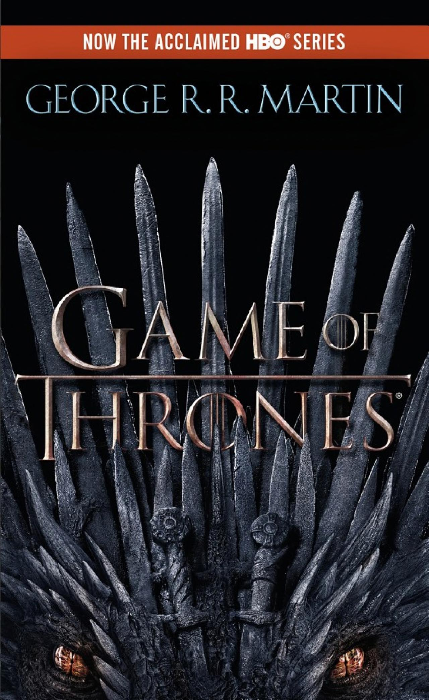
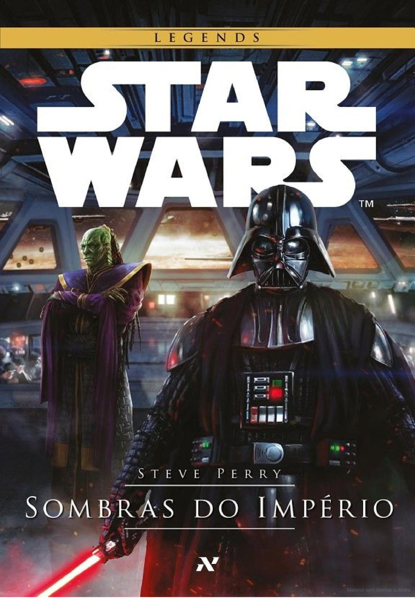
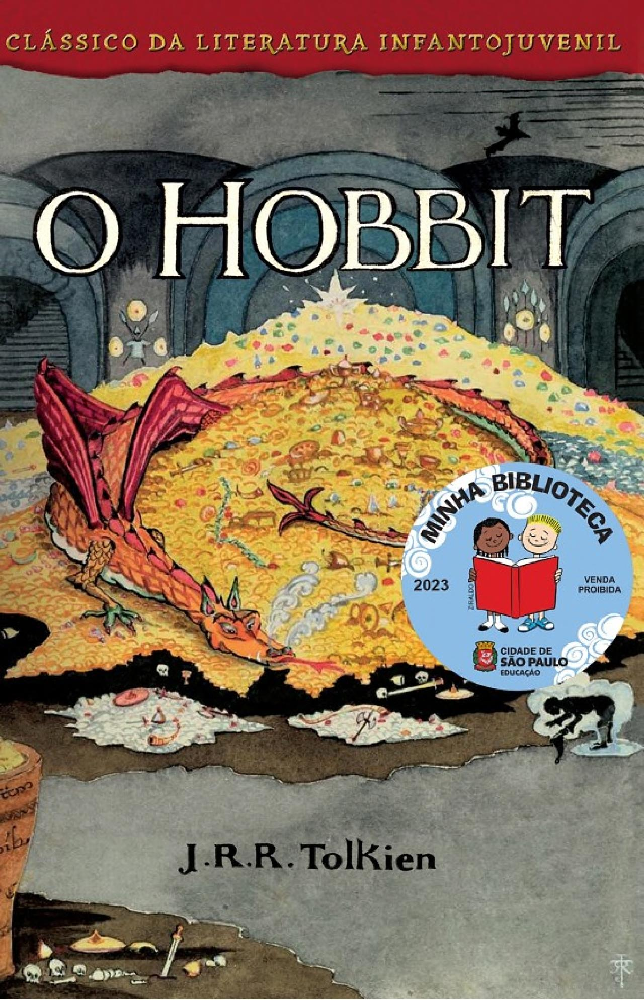

Estante de Livros da Helo
Sua biblioteca a um clique de distância!
One Piece
Sinopse
Luffy é um garoto que deseja tornar-se um pirata por causa do Shanks. Durante uma discussão com Shanks por causa de alguns bandidos das montanhas, o garoto acaba comendo a Gomu Gomu no Mi.
Mais tarde, porém, os bandidos retornam e Luffy decide comprar briga com eles bem quando os piratas não estão lá para protegê-lo. Shanks salva Luffy, mas acaba perdendo seu braço esquerdo por conta disso e logo deixa seu chapéu com o garoto.
Fonte: Google Books Clique aqui
| Data da primeira publicação |
Autor |
Idioma original |
Gênero(s) |
| 24 de dezembro de 1997 |
Eichiro Oda |
Japonês |
Aventura |
Senhor dos Aneis

Sinopse
A Sociedade do Anel O volume inicial de O Senhor dos Anéis, lançado originalmente em julho de 1954, foi o primeiro grande épico de fantasia moderno, conquistando milhões de leitores e se tornando o padrão de referência para todas as outras obras do gênero até hoje. A imaginação prodigiosa de J.R.R. Tolkien e seu conhecimento profundo das antigas mitologias da Europa permitiram que ele criasse um universo tão complexo e convincente quanto o mundo real.
A Sociedade do Anel começa no Condado, a região rural do oeste da Terra-média onde vivem os diminutos e pacatos hobbits. Bilbo Bolseiro, um dos raros aventureiros desse povo, cujas peripécias foram contadas em O Hobbit, resolve ir embora do Condado e deixa sua considerável herança nas mãos de seu jovem parente Frodo.
O mais importante legado de Bilbo é o anel mágico que costumava usar para se tornar invisível. No entanto, o mago Gandalf, companheiro de aventuras do velho hobbit, revela a Frodo que o objeto é o Um Anel, a raiz do poder demoníaco de Sauron, o Senhor Sombrio, que deseja escravizar todos os povos da Terra-média. A única maneira de eliminar a ameaça de Sauron é destruir o Um Anel nas entranhas da própria montanha de fogo onde foi forjado.
A revelação faz com que Frodo e seus companheiros hobbits Sam, Merry e Pippin deixem a segurança do Condado e iniciem uma perigosa jornada rumo ao leste. Ao lado de representantes dos outros Povos Livres que resistem ao Senhor Sombrio, eles formam a Sociedade do Anel.
Alguém uma vez disse que o mundo dos leitores de língua inglesa se divide entre os que já leram O Senhor dos Anéis e os que um dia lerão o livro. Com esta nova tradução da obra, o fascínio dessa aventura atemporal ficará ainda mais evidente para os leitores brasileiros, tanto os que já conhecem a saga como os que estão prestes a descobrir seu encanto.
Fonte: Google Books Clique aqui
| Data da primeira publicação |
Autor |
Idioma original |
Gênero(s) |
| 29 de Julho de 1954 |
J.R.R. Tolkien |
Inglês |
Alta fantasia, Literatura fantástica, Ficção de aventura |
Game of Thrones

Sinopse
Aqui está o primeiro volume do magnífico ciclo de romances de George RR Martin que inclui A Fúria dos Reis e A Tormenta de Espadas. No seu conjunto, esta série constitui uma verdadeira obra-prima da fantasia moderna, reunindo o que de melhor o género tem para oferecer. Magia, mistério, intriga, romance e aventura preenchem estas páginas e nos transportam para um mundo diferente de todos que já experimentamos. Já aclamada como um clássico, a impressionante série de George RR Martin está destinada a ser uma das grandes conquistas da ficção imaginativa.
Há muito tempo, num tempo esquecido, um evento sobrenatural desequilibrou as estações. Numa terra onde os verões podem durar décadas e os invernos uma vida inteira, os problemas estão se formando. O frio está de volta e, nas regiões congeladas ao norte de Winterfell, forças sinistras e sobrenaturais estão se concentrando além da muralha protetora do reino. No centro do conflito estão os Stark de Winterfell, uma família tão dura e inflexível quanto a terra onde nasceram. Passando de uma terra de frio brutal para um distante reino de verão de abundância epicurista, aqui está uma história de senhores e damas, soldados e feiticeiros, assassinos e bastardos, que se unem em uma época de presságios sombrios.
Aqui, um bando enigmático de guerreiros porta espadas sem metal humano; uma tribo de selvagens ferozes leva os homens à loucura; um cruel jovem príncipe dragão troca sua irmã para reconquistar seu trono; e uma mulher determinada empreende a mais traiçoeira das viagens. Em meio a conspirações e contra-tramas, tragédia e traição, vitória e terror, o destino dos Stark, de seus aliados e de seus inimigos está perigosamente em jogo, enquanto cada um se esforça para vencer o mais mortal dos conflitos: o jogo dos tronos.
Fonte: Google Books Clique aqui
| Data da primeira publicação |
Autor |
Idioma original |
Gênero(s) |
| 1 de agosto de 1996 |
George R. R. Martin |
Inglês |
Romance, Literatura fantástica, Alta fantasia, Ficção Política |
Star Wars

Sinopse
Marco histórico para os fãs de STAR WARS, Sombras do Império é a principal parte de um dos maiores projetos transmídiaticos da LucasFilm. A obra revolucionou o universo da franquia em diversas plataformas, como HQs, livro, games (Nintendo 64 e PC), colecionáveis e rendeu até uma trilha sonora.
Todas convergindo e formando uma só história, que atualmente pertence ao selo Legends. Neste romance, ambientado entre os filmes os episódios V e IV, Han Solo, congelado em carbonita, foi raptado pelo caçador de recompensas Boba Fett e levado ao terrível Jabba, o Hutt. Enquanto a princesa Leia organiza uma missão de resgate, Darth Vader vasculha a galáxia em busca de Luke Skywalker, seguindo as ordens do imperador Palpatine.
Mas Vader não é o único a querer as graças do imperador. Xizor, o senhor de uma organização criminosa chamada Sol Negro, deseja frustrar os planos de Vader para, assim, usurpar a posição do temível Lorde Sombrio junto ao imperador.
Esta edição traz um prefácio de Dilermando Zanella Neto, membro do Conselho Jedi de São Paulo, que na época do lançamento de Sombras do Império se uniu a uma equipe para produzirem um fã-filme de longa metragem de STAR WARS em stop-motion, feito com action-figures da saga.
Fonte: Google Books Clique aqui
| Data da primeira publicação |
Autor |
Idioma original |
Gênero(s) |
| 3 de mar. de 1997 |
Steve Perry |
Inglês |
Ficção científica, Ópera espacial, Literatura fantástica |
O Hobbit

Sinopse
Edição com mapas, capa dura, fitilho, as ilustrações originais de J.R.R. Tolkien e um pôster de Valfenda exclusivo!
Bilbo Bolseiro era um dos mais respeitáveis hobbits de todo o Condado até que, um dia, o mago Gandalf bate à sua porta. A partir de então, toda sua vida pacata e campestre soprando anéis de fumaça com seu belo cachimbo começa a mudar. Ele é convocado a participar de uma aventura por ninguém menos do que Thorin Escudo-de-Carvalho, um príncipe do poderoso povo dos Anãos.
Esta jornada fará Bilbo, Gandalf e 13 anãos atravessarem a Terra-média, passando por inúmeros perigos, como os imensos trols, as Montanhas Nevoentas infestadas de gobelins ou a muito antiga e misteriosa Trevamata, até chegarem (se conseguirem) na Montanha Solitária. Lá está um incalculável tesouro, mas há um porém. Deitado em cima dele está Smaug, o Dourado, um dragão malicioso que... bem, você terá que ler para descobrir.
Lançado em 1937.
O Hobbit é um divisor de águas na literatura de fantasia mundial. Mais de 80 anos após a sua publicação, o livro que antecede os ocorridos em O Senhor dos Anéis continua arrebatando fãs de todas as idades, talvez pelo seu tom brincalhão com uma pitada de magia élfica, ou talvez porque J.R.R. Tolkien tenha escrito o melhor livro infantojuvenil de todos os tempos.
Fonte: Google Books Clique aqui
| Data da primeira publicação |
Autor |
Idioma original |
Gênero(s) |
| 21 de setembro de 1937 |
J.R.R. Tolkien |
Inglês |
Romance, Literatura fantástica, Alta fantasia, Literatura infantil, Épico |